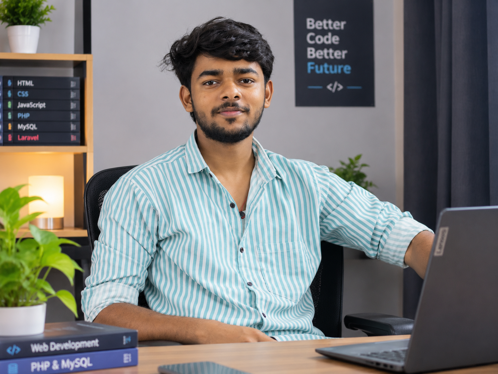
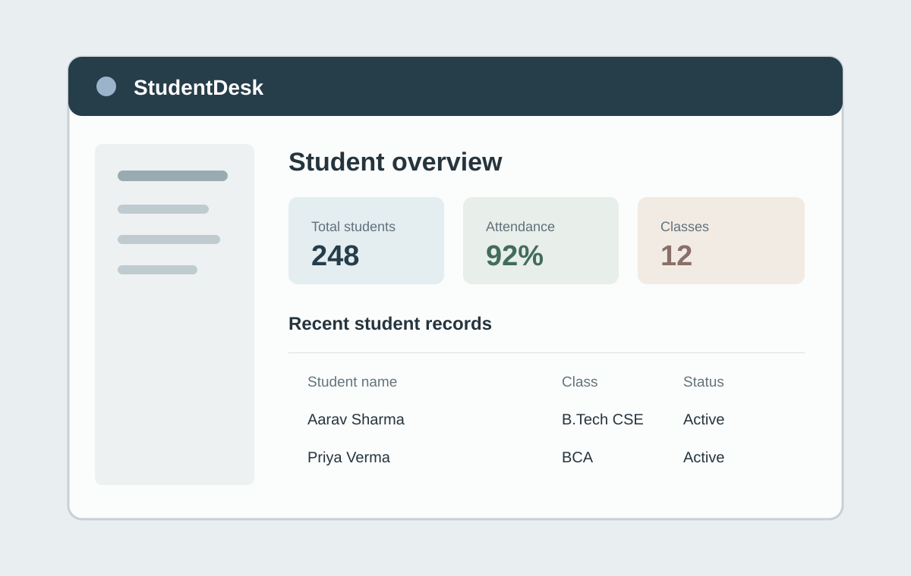
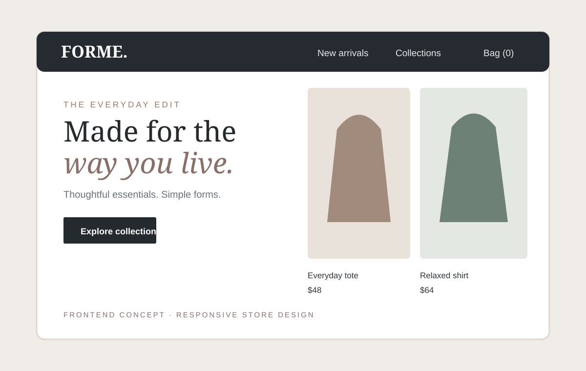

Web application
FindBack — Lost & Found Portal
A platform to report lost and found belongings, browse item listings and manage reports.
Discover the project ↗I’m a Frontend Developer
I build practical web applications using PHP, MySQL and modern frontend technologies. Currently learning, experimenting and improving through real-world projects.

A little about the person behind the code — my background, interests and the way I approach learning.
I’m pursuing Computer Science and building my skills in full-stack web development. My current focus is PHP and MySQL, supported by a foundation in frontend technologies.
I enjoy taking an idea from a simple requirement to a working application, learning from the problems I meet along the way.
A little more about me ↗A few projects from my learning and development journey, covering backend applications and frontend interface design.
A platform to report lost and found belongings, browse item listings and manage reports.
Discover the project ↗
A student-record management project focused on organizing student information and basic operations.
Project details ↗
A frontend shopping experience concept focused on product presentation, layout and responsive design.
Project details ↗Technologies I have worked with and the tools I’m continuing to learn.
HTML5, CSS3, JavaScript, React.js, Bootstrap
PHP, Core PHP · Laravel — currently learning
MySQL
VS Code, XAMPP, Git, GitHub
A continuing journey through education, practical training and hands-on development.
Academic foundation
Mahamaya Polytechnic of Information Technology
Apollo Institute of Technology, Kanpur
DigiCoders Technology, Lucknow
Let's collaborate and bring your ideas to life. I'm open to learning opportunities, collaboration and suitable freelance projects.